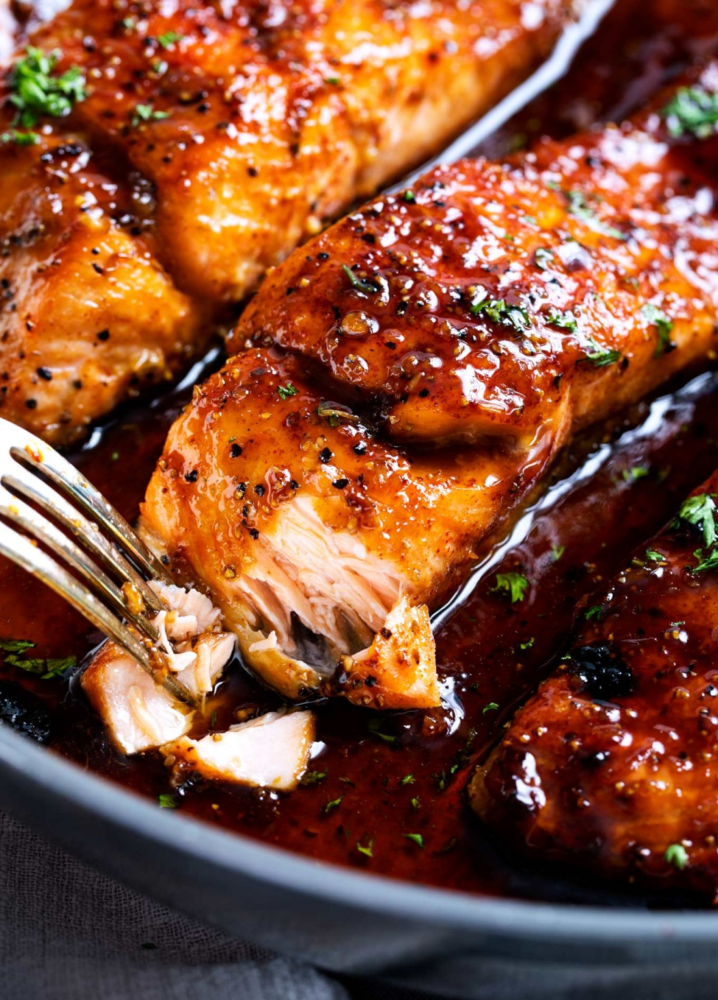
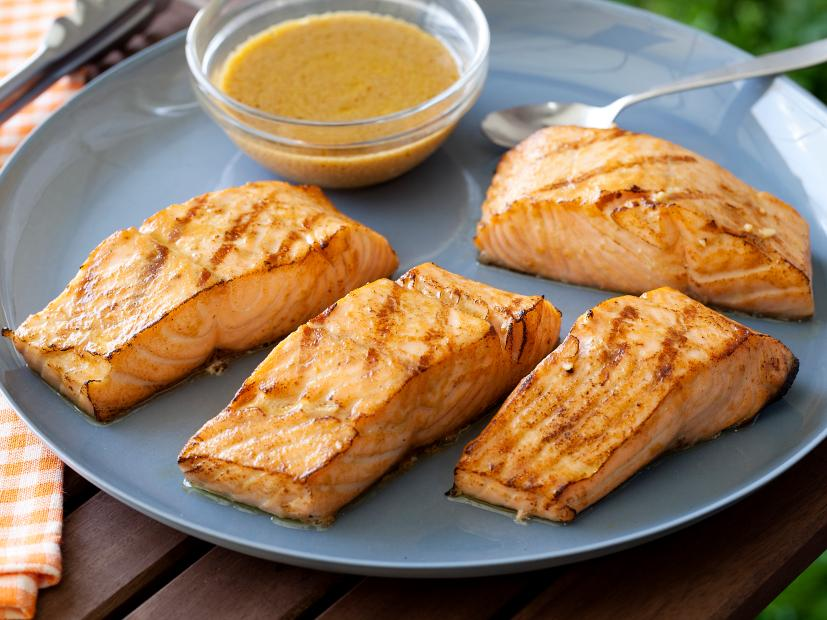

Salmon Recipes

Honey Garlic Salmon
Simple recipe for easy juicy honey garlic salmon
(Recipe used)
Ingredients
Salmon
- 4 Salmon fillets
- 1/2 tsp kosher salt
- 1/2 tsp black pepper
- 1/4 tsp blackening seasoning (optional)
Honey Garlic Sauce
- 3 Tbsp butter
- 2 tsp olive oil
- 6 cloves garlic minced
- 1/2 cup honey
- 3 Tbsp water
- 3 Tbsp soy sauce
- 1 Tbsp sriracha sauce
- 2 Tbsp lemon juice
Steps
- Pat salmon dry, then season with salt, pepper,
paprika and blackening seasoning (if using).
Set aside. Adjust oven rack to middle position, then preheat broiler.
- Add butter and oil to a large, oven-safe skillet over MED-HIGH heat.
Once butter is melted, add garlic, water, soy sauce, sriracha, honey and lemon juice
and cook 30 seconds or so, until sauce is heated through.
- Add salmon, skin side down (if using salmon with skin), and cook 3 minutes.
While salmon cooks, baste frequently with sauce from the pan by spooning it over the top of the salmon.
- Broil salmon for 5-6 minutes, basting with sauce once during the broil,
until salmon is caramelized and cooked to desired doneness.
- Garnish with minced parsley if desired.

Lemon Garlic Salmon
Quick recipe for tender succulent lemon garlic salmon
(Recipe used)
Ingredients
Salmon
- 2lb Salmon fillet
- Kosher salt
- Extra virgin olive oil
- 1/2 lemon, sliced into rounds
- Parsley for garnish
Lemon-Garlic Sauce
- 3 Tbsp butter
- 2 tsp olive oil
- 6 cloves garlic minced
- 1/2 cup honey
- 3 Tbsp water
- 3 Tbsp soy sauce
- 1 Tbsp sriracha sauce
- 2 Tbsp lemon juice
Steps
- Heat oven to 375 degrees F.
- Make the lemon-garlic sauce. In a small bowl or measuring cup,
mix together the lemon juice, lemon zest, extra virgin olive oil, garlic, oregano, paprika and black pepper. Give the sauce a good whisk.
- Prepare a sheet pan lined with a large piece of foil
(should be large enough to fold over salmon).
Brush top of the foil with extra virgin olive oil.
- Now, pat salmon dry and season well on both sides
with kosher salt. Place it on the foiled sheetpan.
Top with lemon garlic sauce (make sure to spread the sauce evenly.)
- Fold foil over the salmon (seam-side up).
Bake for 15 to 20 minutes until salmon is almost completely cooked through at the thickest part
(cooking time will vary based on the thickness of your fish.
If your salmon is thinner, check several minutes early to ensure your salmon does not overcook.
If your piece is very thick, 1 ½ or more inches, it may take a bit longer.)
- Carefully remove from oven and open foil to uncover the top of the salmon.
Place under the broiler briefly, about 3 minutes or so.
Watch closely as it broils to make sure it doesn’t overcook and the garlic does not burn.)

Asian Grilled Salmon
Asian style grilled salmon with easy steps
(Recipe used)
Ingredients
Salmon
Marinade
- 2 Tbsp dijon mustard
- 3 Tbsp soy sauce
- 6 Tbsp olive oil
- 1/2 tsp minced garlic
Steps
- Light charcoal briquettes in a grill and brush the grilling rack
with oil to keep the salmon from sticking.
- While the grill is heating, lay the salmon skin side down on a
cutting board and cut it crosswise into 4 equal pieces.
Whisk together the mustard, soy sauce, olive oil, and garlic in a small bowl.
Drizzle half of the marinade onto the salmon and allow it to sit for 10 minutes.
- Place the salmon skin side down on the hot grill; discard the marinade the fish was sitting in.
Grill for 4 to 5 minutes, depending on the thickness of the fish.
Turn carefully with a wide spatula and grill for another 4 to 5 minutes.
The salmon will be slightly raw in the center, but don't worry; it will keep cooking as it sits.
- Transfer the fish to a flat plate, skin side down, and spoon the reserved marinade on top.
Allow the fish to rest for 10 minutes. Remove the skin and serve warm, at room temperature,
or chilled.